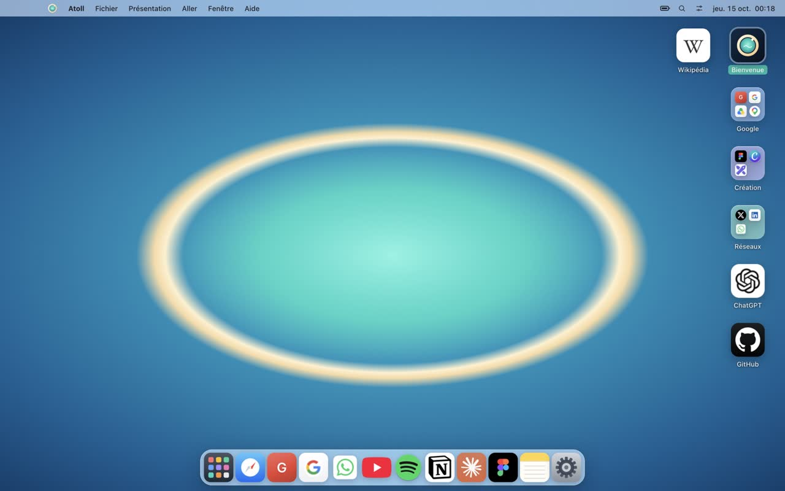
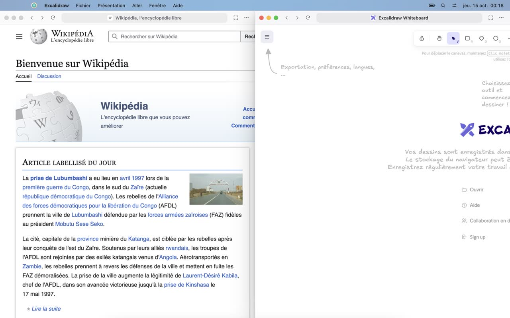
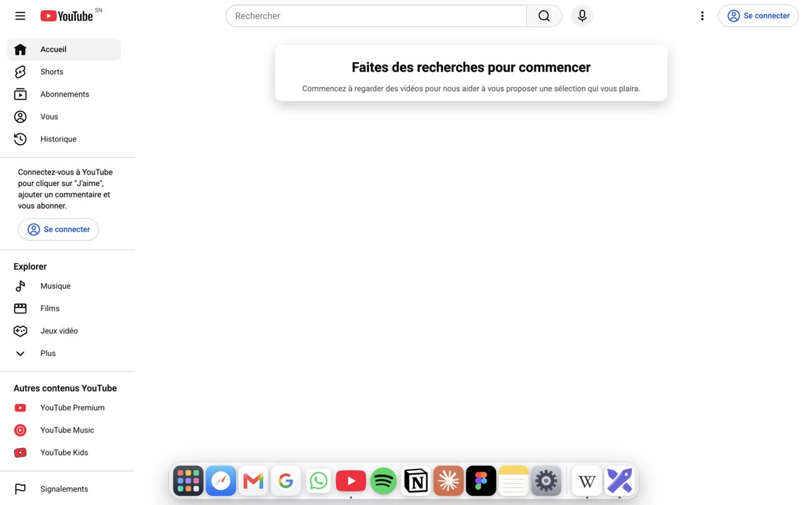
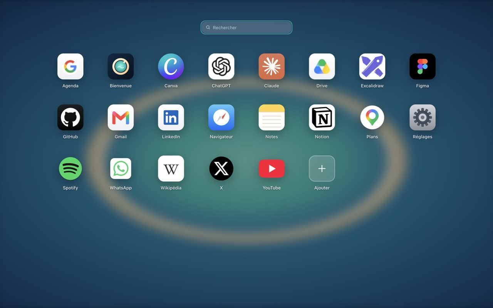
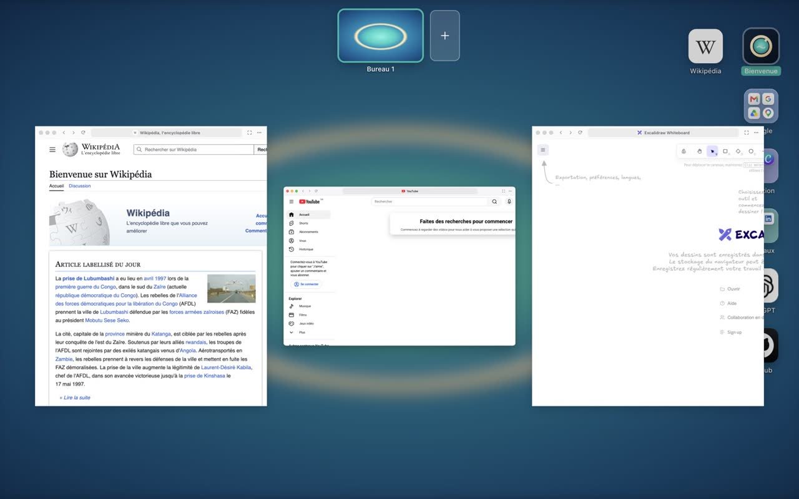
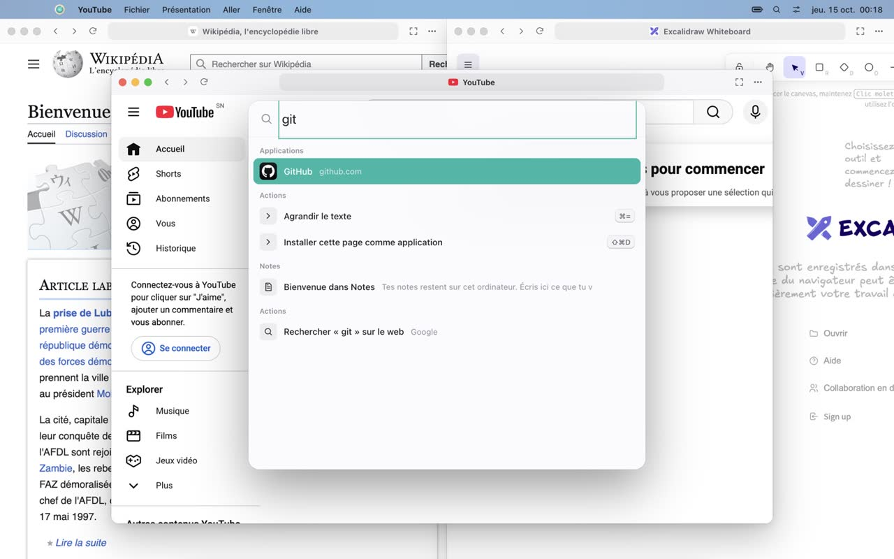
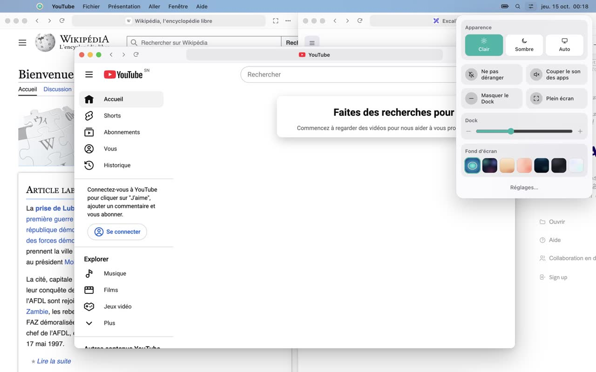
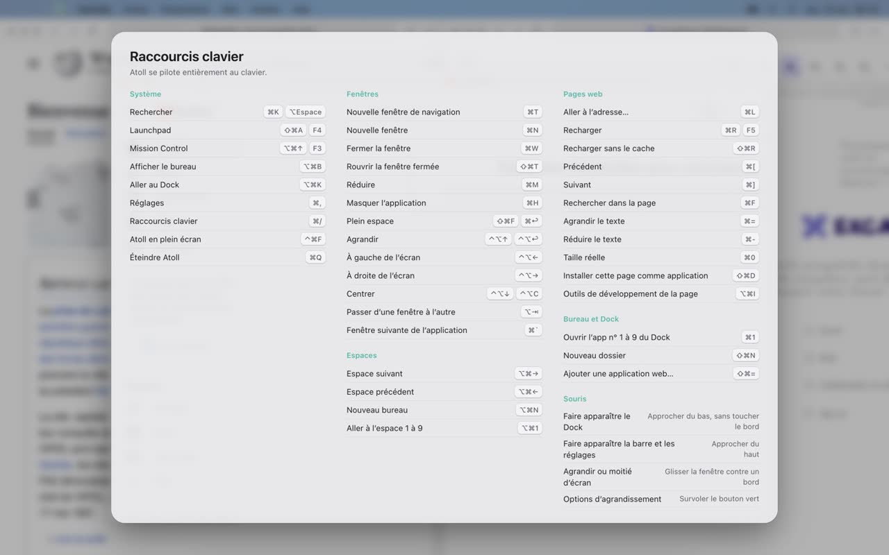

The browser that boots like an operating system.
Open Atoll and it takes over the whole screen, like a Mac you just switched on. Every website becomes an app in its own window — with a desktop, a Dock, spaces, Mission Control and a keyboard shortcut for everything.
Apple Silicon · Mac Intel · Windows 10 & 11 · MIT license · No telemetry
- Desktop & folders
- Dock
- Menu bar
- Control Center
- Full space
- Multiple spaces
- Mission Control
- Launchpad
- ⌘K search
- ⌥Tab switcher
- Window snapping
- 60+ shortcuts
- Built-in Notes & Settings
Your browser is already your computer. It was missing the desktop.
Gmail, Figma, Notion, WhatsApp, YouTube, ChatGPT — we live in the browser. Yet browsers still squeeze everything into a row of tabs. Atoll flips it around: every site is an app with its own window. Drag it, snap it next to another, minimize it into the Dock, give it a whole space, and drive it all from the keyboard. It's the desktop you already know — except every app is a website, and nothing needs installing.
Everything you expect from a desktop. Inside a browser.

It boots like a computer
Boot screen, desktop, Dock, menu bar. Icons on the desktop, folders you drag apps into, right-click menus to rename and tidy up. Leave full screen whenever you like and resize Atoll like a normal window.

Real windows that snap
Move, resize, minimize into the Dock with a genie effect, zoom. Drag a window against an edge to snap it to a half or a quarter — or do it from the keyboard.

Full space, and a Dock that knows its place
The green button gives a window its own space, edge to edge, no border. Move the pointer near the bottom — not all the way — and Atoll's Dock rises. Go all the way down and it steps aside, so it never overlaps the macOS Dock. Same idea at the top for the menu bar.

Launchpad, and any site becomes an app
All your apps in a grid. Add a URL, or install the page you're on, and Atoll fetches its best icon. Gmail, Notion, Figma, Claude, WhatsApp — anything that runs in a browser.

Spaces and Mission Control
Several desktops — one for work, one for everything else. And every window at a glance, live.

One search for everything
Apps, open windows, notes, commands, or a URL — type and hit Return. Shortcuts are caught before the page sees them, so ⌘K works even while you're typing in Gmail.

Control Center
Light or dark theme, Do Not Disturb, mute every app, Dock size, wallpapers. All one click away, top right.
And also
Menu bar
A real menu bar up top, with the active app, the clock and Control Center.
Notes & Settings built in
Notes that stay on your computer, and settings that feel like a system's.
60+ keyboard shortcuts
Every action can be done without the mouse. Press ⌘/ to see them all.
Keep your hands on the keyboard.
More than 60 shortcuts. Here are the essentials. On Windows, ⌘ is Ctrl.
| Action | Shortcut |
|---|---|
| Search apps, windows, URLs | ⌘K |
| Launchpad | ⌘⇧A |
| Mission Control | ⌘⌥↑ |
| Full space on / off | ⌘⇧F |
| Switch windows | ⌥Tab |
| Next / previous space | ⌘⌥→/⌘⌥← |
| Snap left / right | ⌃⌥←/⌃⌥→ |
| Open Dock app 1–9 | ⌘1…⌘9 |
| Close / reopen window | ⌘W/⌘⇧T |
| Show desktop | ⌘⌥B |
| All shortcuts | ⌘/ |

Press ⌘/ at any time to see the full list, grouped by topic.
Your desktop stays yours.
Atoll has nothing to sell you and nothing to collect.
No telemetry
No usage analytics, no silent reports, no tracking pixels.
No account, no server
Nothing to sign up for, nothing to sync. Atoll has no server of its own to talk to.
Everything stays local
Your desktop, your notes and your settings live on your computer.
Sandboxed pages
Every site runs sandboxed and can only reach the web. Electron's risky switches are burned out of the binary.
To be fully transparent: when a site exposes no usable icon, Atoll asks DuckDuckGo's icon service for one; and web searches typed into ⌘K go to Google.
Free, readable, yours.
Atoll is released under the MIT license. Free today, free for good.
Under the hood
- Chromium engine, through Electron. No fork to maintain, so Chromium security updates land fast.
- Vanilla JavaScript, no framework, no bundler. The whole shell is a few thousand readable lines.
- Each app is a sandboxed <webview> composited in the shell — that's what lets the Dock float over a page.
- End-to-end tests that drive Atoll with the mouse and keyboard, like a real user.
$ git clone https://github.com/amadoubaui/atoll $ cd atoll $ node scripts/dev.js # run $ node scripts/test-ui.js # end-to-end tests $ node scripts/build-mac.js # build Atoll.app
What's next
- Tabs inside a window, for those who want them
- Desktop widgets (clock, weather, notes)
- Drag a window to another space in Mission Control
- Per-app profiles (two Gmail accounts side by side)
- Built-in ad blocker
- Linux build
Up and running in a minute.
macOS
- Download
Atoll-mac-apple-silicon.zip(M1, M2, M3, M4…) orAtoll-mac-intel.zip. - Unzip it and drag Atoll into Applications.
- Atoll isn't notarized by Apple yet, so the first time: right-click Atoll → Open → Open.
Windows 10 / 11
- Download
Atoll-windows-x64.zip. - Unzip it and run
Atoll.exe. - If SmartScreen shows up: More info → Run anyway.
Switch on your browser.
Atoll is free and always will be. A star on GitHub helps a lot — and so does a coffee.
Also for Intel Macs and Windows